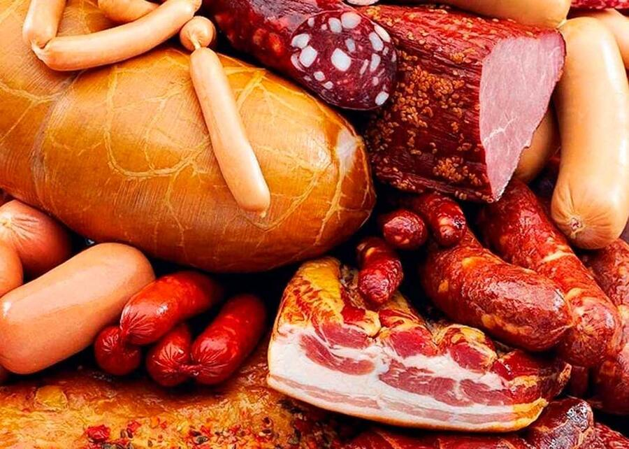

Мясоперерабатывающие производства
- Варёные колбасы, сосиски, сардельки и колбаски
- Варёно-копчёные и полукопчёные колбасы
- Сырокопчёные и сыровяленые колбасы
- Фарши, пельмени и замороженные полуфабрикаты
- Мясные деликатесы и ветчины, топинги
- Холодцы, зельцы, паштеты, консервы
Продлевают срок годности готовой продукции и предотвращают окисление жиров.